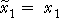
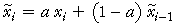
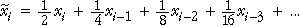
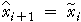
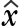
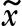

Smoothing up to the end of the series
One problem with the use of moving averages to smooth a time series is that it cannot provide smoothed values for the most recent times. For example, if the run length is 9, the final smoothed value is the average of the most recent 9 values and provides a smoothed value that is 5 time periods from the end of the series — smoothed values cannot be found for the final 4 times.
One solution is to use exponential smoothing. The first 'smoothed' value is defined to be the same as the first value in the series,

Subsequent exponentially smoothed values are 'weighted averages' of the actual value at that time and the previous smoothed value,

where the smoothing constant, a, is a value between 0 and 1.
Alternative formula
With a little algebraic manipulation, the formula can also be expressed as

The smoothed value therefore depends only on earlier values from the series, so we can obtain an exponentially smoothed values up to the end of the series. For example, if a = 1/2 ,

Note here that the smoothed value puts more weight on the recent past (which is an intuitively sensible thing to do). The closer a becomes to one, the smaller the influence of the earlier values in the series.
Forecasting future values
The final exponentially smoothed value in the series can be used to forecast future values. If data are available up to and including time i, then the forecast for the next time period (i + 1) is the exponentially smoothed value at time i. We write this as

where  denotes a forecast and  denotes the exponentially smoothed value. To forecast further into the future, we use the same exponentially smoothed value so, in general,
Since the exponentially smoothed values depend on the smoothing constant, so do the forecasts.
British Airways share trading
The time series plot below shows the volume of British Airways shares traded in the first 57 trading days of 2002 — between 2nd January and 21st March.
In most short periods of time, the main determinant of share price or volume movements is autocorrelation rather than trend. (Overall trends on the stock market are usually fairly slow.) We will therefore apply exponential smoothing to the raw data without first removing a trend from the data.
Use the slider to adjust the value of the smoothing constant, a, and observe its effect on the smoothing of the series.
Click on data values; the green shading shows which of the original values affect any smoothed value — the darker the green, the greater the influence.
Time series with trend
The above example had no long-term trend. However for a time series with an increasing trend, exponential smoothing of the raw data will tend to underestimate the trend. Similarly, the smoothed series will be too high if there is a decreasing trend.
Do not use exponential smoothing on a time series with trend.
(There are modifications to exponential smoothing that can be used in the presence of trend, but these are more advanced.)
World rice production (million tonnes)
The time series below has an increasing linear trend.
Decrease the exponential smoothing constant and observe that the exponentially smoothed values are systematically below the series.